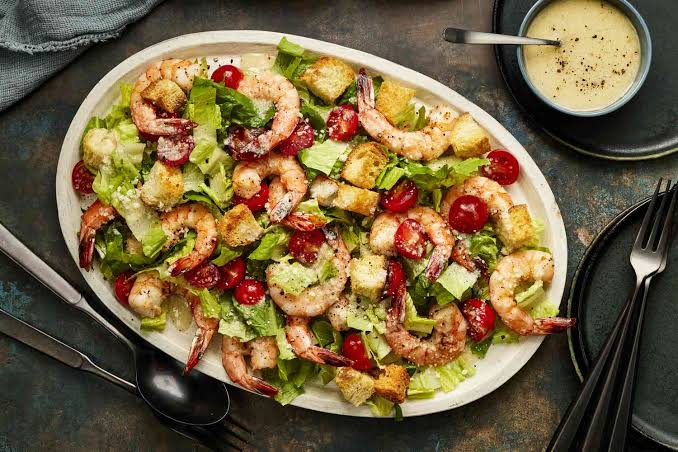

Home
Caesar Salad Recipe

Description
A classic Caesar salad combines crisp romaine lettuce, garlicky croutons, parmesan cheese, and a rich, creamy emulsified dressing.
Ingredients
- 1 large egg yolk (or 1 cup mayonnaise for a quick, egg-free shortcut style)/li>
- 1 clove garlic (finely minced or smashed)
- 1 tbsp fresh lemon juice
- 1 tsp Dijon mustard
- 1 tsp Worcestershire sauce
- ½ cup extra virgin olive oil (streamed in slowly)
- ¼ to ½ cup freshly grated Parmesan cheese
- Salt and freshly cracked black pepper (to taste)
Steps to Follow:
- Make the croutons: Toss bread cubes with olive oil, a pinch of salt, pepper, and garlic powder (or a crushed garlic clove). Bake at 350°F (175°C) for 12 to 15 minutes until golden and crunchy.
- Build the dressing base: In a medium bowl, mash the minced anchovies and garlic together with the side of a knife blade to form a smooth paste. Whisk in the egg yolk, Dijon mustard, Worcestershire sauce, and lemon juice.
- Emulsify the oil: Slowly drizzle in the olive oil while whisking constantly until the mixture thickens into a creamy emulsion. Stir in the grated Parmesan, salt, and black pepper.
- Toss and serve: Place the chopped romaine lettuce in a large mixing bowl. Drizzle the dressing over the greens and toss gently until every leaf is evenly coated. Add the croutons and top with extra shaved Parmesan and black pepper right before serving.